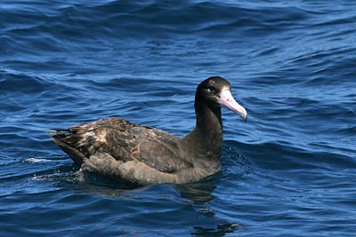
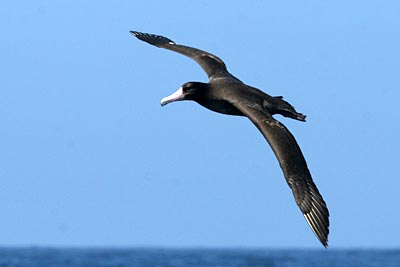

| These photographs accompany records that have been recently submitted to the committee. This record
has been ACCEPTED.   Short-tailed Albatross Phoebastria albatrus 22 April 2007, Monterey Bay, MTY 2007-109 © 2007 Matt Sadowski Back to CBRC Rare Bird Photos |